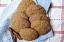

Home
Snickerdoodles

Description
A quick and easy vegan sugar cookie rolled in cinnamon sugar. Super moist
and so delicious!
Ingredients
- 1 and a half cups whole wheat flour
- 1 half cup white sugar
- 1 half teaspoon baking soda
- 1 half teaspoon salt
- 1 half cup vegetable oil
- 1 (4 ounce) container apple sauce
- 1 tablespoon vanilla-flavoured almond milk
- 1 tablespoon vanilla extract
- 1 half cup cinnamon-sugar
Steps
- Preheat oven to 375 degrees F (190 degrees C)
- Mix flour, sugar, baking soda, and salt together in a bowl
-
Beat vegetable oil, applesauce, almond milk, and vanilla extract
together in a separate large bowl; add flour mixture and stir until
combined.
-
Divide dough into 14 portions and roll into balls. Spread cinnamon-sugar
into a wide, shallow bowl. Roll dough balls in the cinnamon-sugar and
arrange onto a baking sheet
- Bake in preheated oven until golden brown, about 10 minutes